Taberna do Viajante
Pratos
-
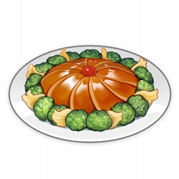
Abalone Vegetariano
Um prato vegetariano com um sabor delicioso. 2,000 Mora
2,000 Mora
-
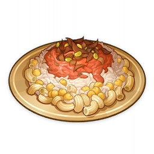
Arroz Misturado de Aaru
O segredo para um gosto incrível está no sabor doce e ácido transmitido pelos tomates.1,900 Mora
-
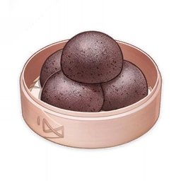
Bolinha de Arroz
É conveniente de se carregar e também enche o estômago facilmente, é um prato principal da região de Liyue.1,500 Mora
-
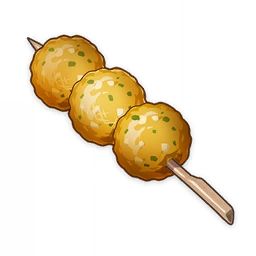
Bolinhas de Rabanete fritas
Aroma incrível e crocantes. Coma enquanto ainda está quente! Dizem ser uma receita de Liyue.1,250 Mora
-
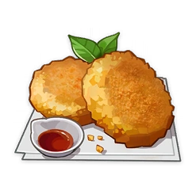
Bolinho de Batata de Mondstadt
Um bolinho frito de purê de batata. Amado por pessoas de todas as idades.1,800 Mora
-
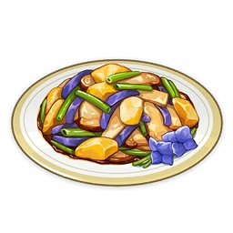
Iguarias do Porto de Pedra
Uma seleção de três ingredientes de Liyue, que são fritos.2,000 Mora
-
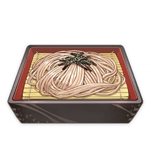
Macarrão Soba
Os ingredientes baratos e a simplicidade deste prato o tornaram muito popular entre os habitantes de Inazuma.1,000 Mora
-

Panelão de Cogumelos
Um prato típico Aranara que Paimon quebrou a cabeça para melhorar.1,400 Mora
-
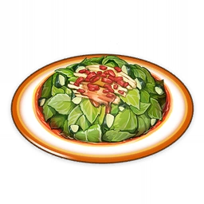
Salada de Menta
Pimentas de Jueyun cortadas delicadamente e misturadas com Menta em um molho temperado.800 Mora
-

Salada Tropical
Fatias frescas e crocantes de Pêssego Zaytun misturadas com Rosas de Sumeru levemente espremidas.950 Mora
-

Sopa de Missô
Um prato de sopa simples e sem adornos.1,100 Mora
-
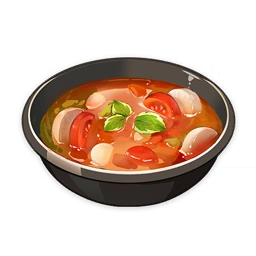
Sopa de Rabanete e Vegetais
Seu sabor é um agridoce delicado. Com rabanetes deliciosos, possui alto valor nutritivo.1,000 Mora
Bebidas
-
Água
Uma garrafa de líquido sem cor e sem nenhuma impureza.300 Mora
-
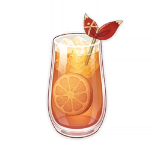
Chá de Baga do Crepúsculo
Uma bebida frutada com um sabor agridoce e agradável.500 Mora
-
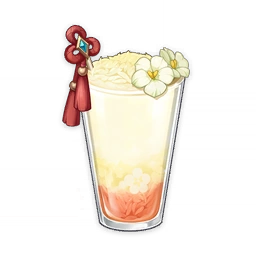
Dueto Frutado
Uma bebida frutada de sabores duplos.450 Mora
-
Fonta
Uma bebida típica de Fontaine.400 Mora
-
Frutas do Festival
O sabor refrescante e a cor vibrante lembram as pessoas do período de festividades.700 Mora
-
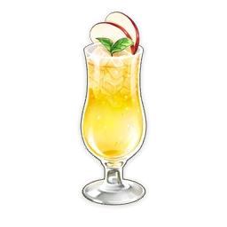
Sidra de Maçã
Uma bebida sem álcool, estilosa e refrescante.600 Mora
-
Suco de Baga com Gás
Valberries maduras em graus diferentes acrescentam camadas de azedo e doce para esse suco.500 Mora
-

Suco de Gancho do Lobo
Uma bebida sem álcool, estilosa e refrescante.700 Mora
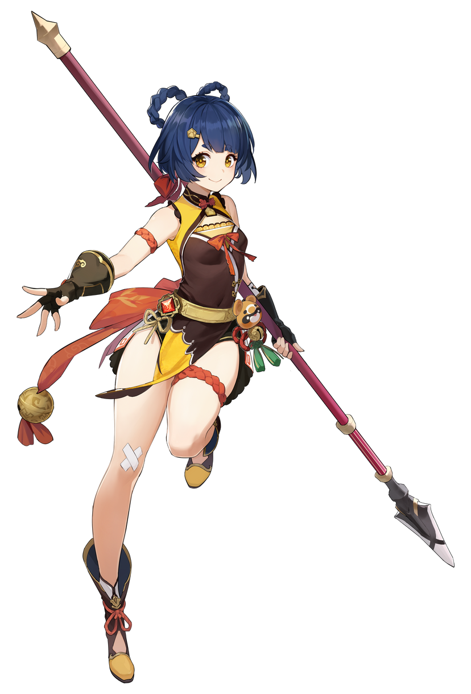